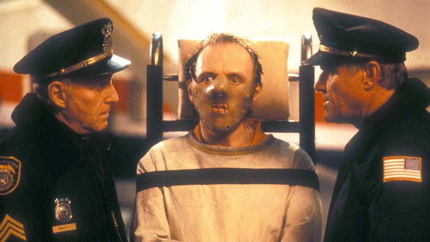
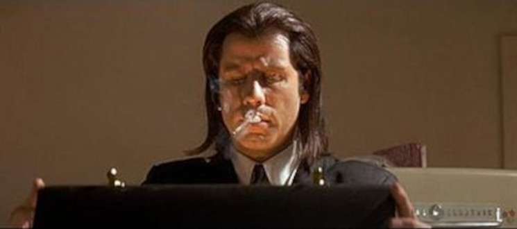

7. O silêncio dos inocentes.
A agente do FBI, Clarice Starling (Jodie Foster) é ordenada a encontrar um assassino que arranca a pele de suas vítimas. Para entender como ele pensa, ela procura o periogoso psicopata, Hannibal Lecter (Anthony Hopkins), encarcerado sob a acusação de canibalismo.
6.Pulp Fiction: Tempos de violência
Vincent Vega (John Travolta) e Jules Winnfield (Samuel L. Jackson) são dois assassinos profissionais trabalham fazendo cobranças para Marsellus Wallace (Ving Rhames), um poderosos gângster. Vega é forçado a sair com a garota do chefe, temendo passar dos limites; enquanto isso, o pugilista Butch Coolidge (Bruce Willis) se mete em apuros por ganhar luta que deveria perder.
5. A lista de Schindler
A inusitada história de Oskar Schindler (Liam Neeson), um sujeito oportunista, sedutor, "armador", simpático, comerciante no mercado negro, mas, acima de tudo, um homem que se relacionava muito bem com o regime nazista, tanto que era membro do próprio Partido Nazista (o que não o impediu de ser preso algumas vezes, mas sempre o libertavam rapidamente, em razão dos seus contatos). No entanto, apesar dos seus defeitos, ele amava o ser humano e assim fez o impossível, a ponto de perder a sua fortuna mas conseguir salvar mais de mil judeus dos campos de concentração.
4. O poderoso chefão 2
Início do século XX. Após a Máfia local matar sua família, o jovem Vito (Robert De Niro) foge da sua cidade na Sicília e vai para a América. Já adulto em Little Italy, Vito luta para ganhar a vida (legal ou ilegalmente) e manter sua esposa e filhos. Ele mata Black Hand Fanucci (Gastone Moschin), que exigia dos comerciantes uma parte dos seus ganhos. Com a morte de Fanucci, o poderio de Vito cresce muito, mas sua família é o que mais importa para ele. Um legado de família que vai até os enormes negócios que nos anos 50 são controlados pelo caçula, Michael Corleone
3. 2001 - Uma oddiséia no espaço
Desde a "Aurora do Homem" (a pré-história), um misterioso monolito negro parece emitir sinais de outra civilização interferindo no nosso planeta. Quatro milhões de anos depois, no século XXI, uma equipe de astronautas liderados pelo experiente David Bowman (Keir Dullea) e Frank Poole (Gary Lockwood) é enviada à Júpiter para investigar o enigmático monolito na nave Discovery, totalmente controlada pelo computador HAL 9000. Entretanto, no meio da viagem HAL entra em pane e tenta assumir o controle da nave, eliminando um a um os tripulantes.
2. Cidadão Kane
Dirigido por Orson Welles, o longa conta a ascensão de um mito da imprensa americana. De garoto pobre no interior a magnata de um império do jornalismo e da publicidade mundial. Inspirado na vida do milionário William Randolph Hearst.
1. O Poderoso Chefão
Don Vito Corleone (Marlon Brando) é o chefe de uma "família" de Nova York que está feliz, pois Connie (Talia Shire), sua filha, se casou com Carlo (Gianni Russo). Porém, durante a festa, Bonasera (Salvatore Corsitto) é visto no escritório de Don Corleone pedindo "justiça", vingança na verdade contra membros de uma quadrilha, que espancaram barbaramente sua filha por ela ter se recusado a fazer sexo para preservar a honra. Vito discute, mas os argumentos de Bonasera o sensibilizam e ele promete que os homens, que maltrataram a filha de Bonasera não serão mortos, pois ela também não foi, mas serão severamente castigados. Vito porém deixa claro que ele pode chamar Bonasera algum dia para devolver o "favor". Do lado de fora, no meio da festa, está o terceiro filho de Vito, Michael (Al Pacino), um capitão da marinha muito decorado que há pouco voltou da 2ª Guerra Mundial. Universitário educado, sensível e perceptivo, ele quase não é notado pela maioria dos presentes, com exceção de uma namorada da faculdade, Kay Adams (Diane Keaton), que não tem descendência italiana mas que ele ama. Em contrapartida há alguém que é bem notado, Johnny Fontane (Al Martino), um cantor de baladas românticas que provoca gritos entre as jovens que beiram a histeria. Don Corleone já o tinha ajudado, quando Johnny ainda estava em começo de carreira e estava preso por um contrato com o líder de uma grande banda, mas a carreira de Johnny deslanchou e ele queria fazer uma carreira solo. Por ser seu padrinho Vito foi procurar o líder da banda e ofereceu 10 mil dólares para deixar Johnny sair, mas teve o pedido recusado. Assim, no dia seguinte Vito voltou acompanhado por Luca Brasi (Lenny Montana), um capanga, e após uma hora ele assinou a liberação por apenas mil dólares, mas havia um detalhe: nas "negociações" Luca colocou uma arma na cabeça do líder da banda. Agora, no meio da alegria da festa, Johnny quer falar algo sério com Vito, pois precisa conseguir o principal papel em um filme para levantar sua carreira, mas o chefe do estúdio, Jack Woltz (John Marley), nem pensa em contratá-lo. Nervoso, Johnny começa a chorar e Vito, irritado, o esbofeteia, mas promete que ele conseguirá o almejado papel. Enquanto a festa continua acontecendo, Don Corleone comunica a Tom Hagen (Robert Duvall), seu filho adotivo que atua como conselheiro, que Carlo terá um emprego mas nada muito importante, e que os "negócios" não devem ser discutidos na sua frente. Os verdadeiros problemas começam para Vito quando Sollozzo (Al Lettieri), um gângster que tem apoio de uma família rival, encabeçada por Phillip Tattaglia (Victor Rendina) e seu filho Bruno (Tony Giorgio). Sollozzo, em uma reunião com Vito, Sonny e outros, conta para a família que ele pretende estabelecer um grande esquema de vendas de narcóticos em Nova York, mas exige permissão e proteção política de Vito para agir. Don Corleone odeia esta idéia, pois está satisfeito em operar com jogo, mulheres e proteção, mas isto será apenas a ponta do iceberg de uma mortal luta entre as "famílias".
fontes by Adoro Cinema